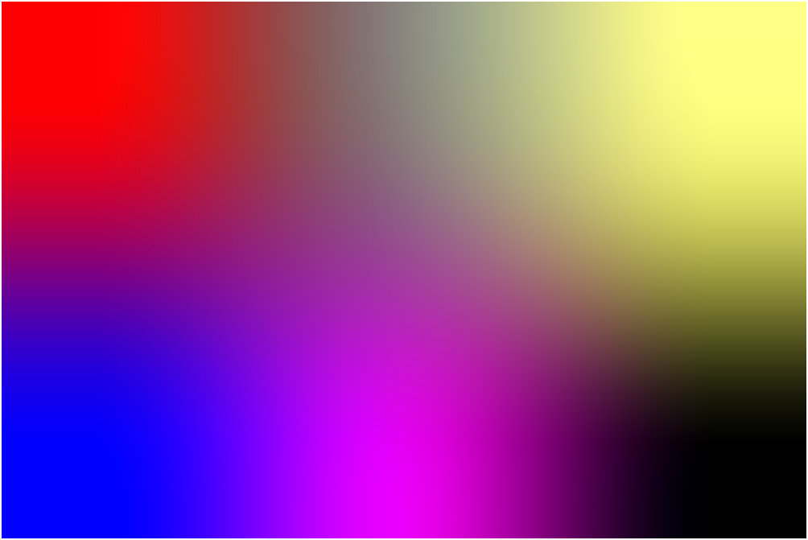

On peut voir une image dans un rectangle d’un graphe 2d, ou collé
à une surface d’un graphe 3d.
Par exemple la commande :
rectangle(200,0,1/2,gl_texture="terre.jpg")
affiche dans le plan un rectangle (défini par les points 200 et 0 de rapport
1/2) contenant l’image numérisée dans le fichier terre.jpg:

Dans l’espace, on peut par exemple coller l’image sur une sphère
de centre l’origine et de rayon 1 par la commande :
sphere([0,0,0],1, gl_material=[gl_texture,"terre.jpg"]):